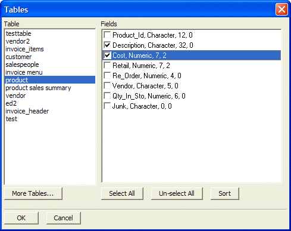
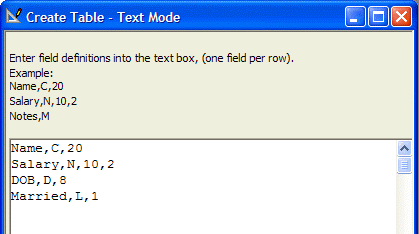
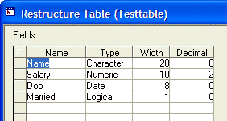

Create a New Table from Sample Data
Alpha Anywhere allows you to create a table by entering sample data.
Display the Tables/Sets tab of the Control Panel.
Click New > New Table (Text mode ...) to display the Create Table - Text Mode dialog box.
Optionally, enter the format of the fields, one line per row. The data should be structured as follows:
|
Item |
Type |
Description |
|
Field_Name |
C |
Can be up to 32 characters. The field name must start with a letter, and can contain the characters A-Z, 0-9, and the underscore character (_). |
|
Field_Type |
C |
Can be C (character), N (numeric), D (date), L (logical), M (memo), R (RTF memo), B (bitmap image), J (JPEG image), I (image reference), O (OLE). |
|
Character_Width |
N |
The total number of characters that the field will require. |
|
Decimal_Width |
N |
Only required for numeric fields. The portion of the total field width used for the decimal value. The decimal point takes a character position. |
Optionally, click Import Table Structure on the toolbar and select one or more field structures from any combination of other tables. Picture
{kind=link}

Click Create Table. The field specification syntax is the same as used in the Create Table dialog box in Design Mode.

The resulting table is shown in the following image.

See Also
Table_and_Field_Names, Create a New Table, Create a New Table by Example